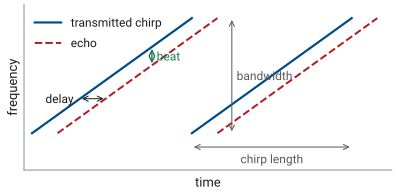
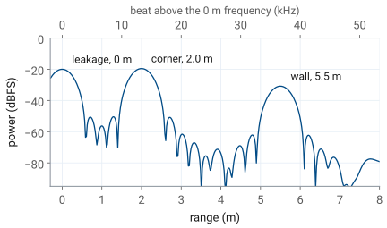
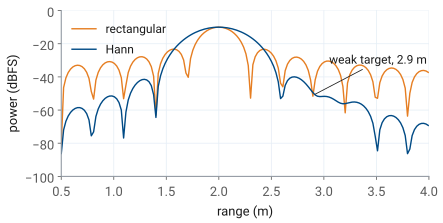
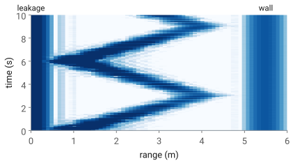

L28 - FMCW on the Phaser#
FMCW on the Phaser
A 500 MHz chirp turns each meter of range into 6.67 kHz of beat frequency.
Lesson 28 · Antennas, Phased Arrays, and Radar Systems · Dr. Neil Rogers
Printing
To print the slides, switch to present mode and print: one slide a sheet, with room for notes. Print from read mode for the whole lesson and lab.
Learning Objectives
- I can calculate range resolution, unambiguous range, and Doppler shift for a given radar waveform.
- I can describe FMCW radar operation and configure an FMCW waveform on the ADALM-PHASER.
- I can process FMCW radar data to produce range, range-waterfall, and range-Doppler results.
Lesson 26 measured range as a round-trip delay and showed that a chirp gives a long transmission the resolution of a short pulse, \(\Delta R = c/2B\). It left one problem open: a target 3 m away returns its echo after 20 ns, far too short for the PHASER’s 0.6 MSPS receiver to time. This lesson shows how a frequency-modulated continuous-wave (FMCW) radar converts that delay into a frequency of a few kilohertz, how one FFT turns the frequency back into range, and what sets the resolution and the farthest range the kit can report. The L28 Lab follows on this page. You work it on your own kit, outside class, and it is the first stage of the radar your final report describes, so this page carries the whole theory the lab needs.
A Chirp and Its Echo

The transmitter sweeps \(B\) in \(T_s\), then starts again.
The echo is the same ramp, late by the round trip.
The gap between them, the beat, is constant.
An FMCW radar transmits continuously, and its frequency climbs linearly across a bandwidth \(B\) during each chirp of length \(T_s\). On the PHASER the chirp starts near 10 GHz and sweeps \(B = 500\) MHz in \(T_s = 0.5\) ms. The echo from a target at range \(R\) is a copy of the transmitted chirp delayed by the round trip,
which is 6.7 ns for every meter. The receiver compares the echo with the chirp that is still going out. Because both ramps climb at the same rate, the echo is always below the transmitted chirp by the same frequency, and that difference is the beat frequency \(f_b\). The figure exaggerates the delay so that it is visible: on the PHASER, a target at 3 m delays the echo by 20 ns, 0.004% of a 0.5 ms chirp.
The Beat Frequency
The transmitted frequency rises at the chirp slope \(B/T_s\), which for the PHASER is \(500\ \text{MHz}/0.5\ \text{ms} = 1\ \text{MHz}\) per microsecond. In the delay \(\tau\) the chirp climbs \(\tau B/T_s\), so the beat frequency is
The beat is proportional to range, so the radar reads range by measuring a frequency. A target at 1 m gives 6.67 kHz, and one at 3 m gives 20.0 kHz. These frequencies are low enough for the Pluto to sample directly, even though the chirp itself spans 500 MHz: comparing the echo with the outgoing chirp removes the sweep and leaves only the small difference that carries the range. ADI’s FMCW lab calls this stretch processing.
The kHz per meter depends on both waveform settings. Halving the bandwidth to 250 MHz halves it, to 3.33 kHz per meter, and so does doubling the chirp length to 1 ms. The two changes give the same beat for the same target, but as the next frames show, only one of them changes the resolution.
FMCW Explorer
The left panel is the beat signal over one chirp, with the 0 m frequency removed, and the right panel is its range spectrum, the FFT of those samples with the frequency axis converted to range. Move the target and count the cycles: every meter adds \(2B/c = 3.33\) cycles a chirp at 500 MHz. Halve the bandwidth or double the chirp length and watch the beat per meter halve. Turn on the second target and bring it in toward the first until the two peaks merge; the green bar is \(c/2B\). Then set the second target 20 to 40 dB weaker and switch between the rectangular and Hann windows.
Range Resolution
Two targets separate when their beats differ by one cycle a chirp.
The chirp length cancels: only \(B\) sets the resolution.
The radar sees each target’s beat for one chirp, \(T_s\), and an FFT over a record of length \(T_s\) separates two tones only if they differ by at least \(1/T_s\). Over one chirp, that is a difference of one cycle. Converting that frequency step to range with the beat per meter,
the result of Lesson 26. At 500 MHz it is 0.30 m. A longer chirp makes the beat per meter smaller but lets the FFT resolve finer frequency steps in the same proportion, so \(T_s\) cancels. Halving the bandwidth to 250 MHz doubles the resolution cell to 0.60 m; doubling the chirp length to 1 ms leaves it at 0.30 m.
The number of beat cycles in one chirp is \(f_bT_s = 2RB/c\), which does not depend on \(T_s\) either. Two plates 0.30 m apart differ by exactly one cycle a chirp at 500 MHz; closer than that, their beats stay in step for the whole chirp and the FFT returns one peak.
The Range FFT
One chirp: 300 samples at 0.6 MSPS, one FFT.
Each FFT bin is 2 kHz, one 0.30 m range cell.

The PHASER’s Pluto samples the beat at \(f_s = 0.6\) MSPS, so one 0.5 ms chirp is \(N = 300\) complex samples. The FFT of those samples is the range profile: each bin is a frequency, and the beat-per-meter relation converts it to a range,
where \(f_0\) is the 0 m frequency of the next frame. The bins are \(f_s/N = 2\) kHz apart, which is 0.30 m, one resolution cell. Padding the record with zeros before the FFT, to 1024 or 4096 points, draws the same spectrum on a finer grid and makes the peaks easier to read, but it does not resolve anything new.
The figure is one chirp from the lab’s recorded data: a 10 cm corner reflector at 2.0 m, the transmit antenna’s direct path into the array at 0 m, and the far wall at 5.5 m. The top axis shows the same profile as beat frequency above \(f_0\), at 6.67 kHz per meter.
The FFT also integrates. The 300 samples of a steady tone add in phase while the noise adds in power, so the tone rises \(10\log_{10}300 = 24.8\) dB above the noise per sample, as Lesson 27 described. Seen another way, each bin listens to only 2 kHz of noise. That is the narrowing Lesson 25 promised: the corner at 3 m, 31.1 dB above the noise in 1 MHz, stands \(31.1 + 10\log_{10}(1\ \text{MHz}/2\ \text{kHz}) = 58.1\) dB above it in one bin.
The 0 m Frequency
The kit offsets the outgoing chirp by about 100 kHz, so a 0 m echo lands at \(f_0 \approx 100\) kHz.
Each kit’s \(f_0\) differs slightly; calibrate it with a plate held against the array.
The leakage spike always sits at \(f_0\).
The PHASER does not put a 0 m echo at zero frequency. The Pluto transmits its tone offset by signal_freq in ADI’s scripts, about 100 kHz, from the frequency the receiver compares the echo with, so every beat lands about 100 kHz above zero. That keeps the targets clear of zero frequency, where the receiver’s own offset and low-frequency noise sit. The offset is not exactly 100 kHz on every kit, and the cables and the board add a little delay of their own, so each kit has its own 0 m frequency \(f_0\), and the range equation measures beats from it.
The calibration is simple. Hold a flat metal plate against the array face, read the frequency of the peak, and record it as \(f_0\); ADI’s lab expects a value such as 99 or 103 kHz. With the plate gone, a peak stays at \(f_0\): it is the transmit antenna’s direct path into the array, the leakage, and it marks 0 m on every capture you take. A kit whose \(f_0\) is off by 1 kHz reports every range 0.15 m long or short.
Range the Sample Rate Allows
250 MHz or 1 ms doubles it to 60 m.
The Pluto samples complex data at \(f_s\), so it can represent beat frequencies up to \(f_s/2 = 300\) kHz. A target far enough away to put its beat above that limit aliases: it reappears at a wrong frequency, and the range profile shows it at a wrong range. With the 0 m frequency at 100 kHz, the beats above it have 200 kHz of room, so the farthest range the profile reports is
This limit comes from the sample rate, not from the transmit power; Lesson 25 put the detection range of a 10 cm corner near 8.5 m in a 1 MHz bandwidth, and further out in the 2 kHz of one bin. A slower slope reaches further: halving \(B\) or doubling \(T_s\) halves the beat per meter and doubles \(R_\text{max}\) to 60 m. Halving \(B\) also doubles the resolution cell, so the two settings trade reach against resolution in different ways, which the lab measures.
Windowing the Chirp

Rectangular: sidelobes at −13 dB hide weak targets.
Hann: sidelobes at −31 dB, a main lobe 1.6 times wider, 1.8 dB less SNR.
An FFT of one chirp treats the record as if it started and stopped abruptly, which gives each tone a \(\sin x/x\) response with sidelobes 13 dB below the peak, falling slowly. A strong target’s sidelobes then cover the bins around it, and a weak target nearby disappears under them. In the figure the second target, 40 dB weaker and 0.9 m beyond the first, is invisible with the rectangular window.
Multiplying the samples by a window that tapers smoothly to zero at both ends of the chirp lowers the sidelobes. The Hann window, \(w[n] = \tfrac{1}{2}\left(1 - \cos(2\pi n/N)\right)\), puts the first sidelobe at −31 dB and the rest falling fast, and the weak target appears. This is the amplitude taper of Lesson 22 applied in time instead of across the array, with the same consequences: the main lobe widens, from a 3 dB width of 0.89 bins to 1.44 bins, so two equal targets one cell apart may merge, and the window discards some signal energy, a 1.8 dB loss in SNR. The course uses Hann by default; the rectangular window is the choice only when two equal targets must be split at the edge of the resolution.
The Range Waterfall

Each row is one range profile; time runs up.
Fixed objects draw vertical lines; a walker draws a zigzag.
The slope of the trace is the walker’s speed.
One range profile is a snapshot. Stacking the profiles of successive chirps, one row per chirp and darker for a stronger echo, gives the range waterfall: range across, time up. A fixed object, the leakage at 0 m or the wall at 5.5 m, keeps the same range in every row and draws a vertical line. A person walking from 1 m out to 4 m and back draws a zigzag, and the slope of each leg is the walking speed: 3 m in 3 s is 1 m/s.
The waterfall records range against time and nothing else. Its rows here are 50 ms apart, one profile each time the display updates, and over 50 ms a walker’s carrier phase changes by many cycles, so successive rows say nothing about the walker’s velocity except through the range they show. Lesson 29 takes chirps a fixed 0.5 ms apart and reads the velocity from that phase.
The Provided Range FFT
def range_fft(cap, window="hann",
n_fft=None):
iq = cap["iq"]
w = _window(window, iq.shape[1])
X = np.fft.fft(iq * w, n_fft or
iq.shape[1], axis=1)
return X / w.sum()
The course provides
radar_lab.py, complete.Each lab’s notebook changes a line or two of it.
The four labs that follow share one Python module, radar_lab.py, and one capture format. The course provides the module complete: you run it from a notebook, one for each lab, and each lab’s tasks change a parameter or a line or two, never a whole function. The excerpt is the function this lesson describes: it windows every chirp, takes the FFT along each one, and divides by the sum of the window, so that a tone of amplitude 1 reads 0 dBFS whatever the window. n_fft larger than the samples in a chirp zero-pads it. The result has one row per chirp and one column per range bin.
A capture is an .npz file holding iq, the complex beat samples of the summed array with one chirp a row, shape n_chirps × n_samples; optionally iq_ch, the same samples from the array’s two halves, shape 2 × n_chirps × n_samples, which Lesson 31 uses to measure angle; the sample rate fs; the carrier fc; the bandwidth B; the chirp length T_ramp, the lesson’s \(T_s\); the time PRI from one chirp to the next; and f0, the 0 m frequency from your calibration. The number of chirps is not fixed: 32 in an L28 range capture, 256 in the L29 burst, and thousands in a record of several seconds. The range of each bin comes from range_axis, the range equation of the range FFT frame with k the meters per hertz of beat:
def range_axis(cap, n_fft=None):
n = n_fft or cap["iq"].shape[1]
f = np.fft.fftfreq(n, 1 / cap["fs"])
k = C * cap["T_ramp"] / (2 * cap["B"])
return (f - cap["f0"]) * k
The bins come out in the order np.fft.fft returns them, and the bins below \(f_0\) as negative ranges. Two more L28 functions build on range_fft: range_profile(cap, chirp=0, window="hann") returns one chirp’s ranges at or beyond 0 m and its power in dB, (r, p_db), and waterfall(cap) returns (r, t, w_db), one row per chirp. Lesson 29 uses range_doppler and mti, Lesson 30 uses cfar_2d, and Lesson 31 uses the spectrogram, a classifier, and a tracker, all in the same module. The L28 notebook is L28_range.ipynb.
L28 Lab: FMCW Range
Calibrate \(f_0\), then place a plate at 1, 2, and 3 m: measure the kHz per meter.
Predict, then measure, 250 MHz and 1 ms.
Read the waterfall; run the notebook’s three tasks.
The L28 Lab measures everything this lesson derived, on your own kit: the 0 m frequency, the beat per meter, how the bandwidth and the chirp length change it, and the range waterfall. The Phaser app does all of the live work: the calibration, the range spectrum, the waterfall, and saving captures. The lab ends in the course’s notebook, where you run the provided range FFT on the captures you saved and change one line for each of three tasks. You work the lab on your own, outside class, and turn in one packet in three parts: Part 1, Pre-Lab, the predictions, before you go to the bench; Part 2, Measurements, from your own kit; and Part 3, Writeup, after it. The packet is checked and returned with feedback. It is the first piece of scaffolding for your final report, and it is not the report.
The procedure is ADI’s FMCW lab with the course’s numbers: a 10 GHz carrier, 500 MHz in 0.5 ms, and \(c = 3.00\times 10^8\) m/s. The radar setup page describes the transmit path.
Predict Before You Measure
\(B\) |
\(T_s\) |
kHz per meter |
\(\Delta R\) |
\(R_\text{max}\) |
|---|---|---|---|---|
500 MHz |
0.5 ms |
6.67 |
0.30 m |
30 m |
250 MHz |
0.5 ms |
3.33 |
0.60 m |
60 m |
500 MHz |
1 ms |
3.33 |
0.30 m |
60 m |
The table is the core of Part 1. Every number in it follows from the beat-frequency and resolution frames, with \(f_s = 0.6\) MSPS and \(f_0 = 100\) kHz, and the bench checks each column. The beat per meter is the slope of the line through your 1, 2, and 3 m readings. The resolution shows as the width of the peak: at 250 MHz the peak from the same plate is twice as wide in range. The reach is not something the lab can walk out to, but the range axis shows where it ends. Doubling the chirp length also doubles the samples in each chirp, so the noise floor of the range profile should drop by 3 dB while the target stays where it was.
Bench Rules
Transmit antenna on OUT2, before you power the kit.
Stand clear of the beam while you measure a static target.
Use a flat metal plate, square to the array, at array height.
A static target is only static if nothing else moves. Your own body is a larger reflector than a small plate, so step behind the kit or well to one side while you read a static range; otherwise your echo adds a moving peak near the target’s and the profile you save is not the one you meant to save. Keep the beam’s path clear of walls and furniture for at least 4 m if you can, and expect the far wall to show up as a peak of its own.
Any flat metal plate about 20 cm on a side works, and so does aluminum foil glued smoothly to cardboard. A plate reflects strongly only when it faces the array squarely, so turn it slowly until its peak is highest before you read the frequency. A trihedral folded from three foil-covered cardboard squares is more forgiving of its angle. The course has only one or two commercial corner reflectors; no step needs one, and if one is free, Part 2 has an optional reading for it. Measure range from the array face to the plate’s front with a tape measure.
What You Keep
Your captures: the 2 m plate and the walk.
Your \(f_0\) and your measured kHz per meter.
Your notebook, with its edits and plots.
The L29 Lab starts from your own L28 captures and notebook, so keep them together with radar_lab.py, with the capture file names written in your packet. For the final report, keep three results from this lab: the beat per meter you measured against the 6.67 kHz the lesson predicts, the resolution you saw at 500 and 250 MHz, and a waterfall you can explain line by line. The report asks you to explain how a chirp becomes a range measurement and what resolution you actually reached, in your own words; the packet’s tables are the evidence for it, not the explanation.
Equipment and Setup
You need:
the ADALM-PHASER kit with its Raspberry Pi and Pluto attached, and its transmit antenna;
a flat metal plate about 20 cm on a side, or foil glued to cardboard;
a tape measure and about 4 m of clear floor in front of the kit;
your laptop, on the kit’s network for the Phaser app, and set up for the notebook as the Notebook Setup frame describes.
The course’s Phaser app runs the radar in its FMCW mode. That mode is still being finished, so its control names and layout are not yet known; this page names each setting by the quantity it sets, and where the app’s label differs, use the app’s. ADI’s FMCW_RADAR_Waterfall.py makes the same measurements from a script, with a bandwidth slider, a range toggle, and a chirp length set in its ramp_time variable; its 12.145 GHz carrier does not change the beat per meter.
With the kit powered off, connect the transmit antenna to OUT2.
Power the kit, wait for the Pi to boot, open the Phaser app, and select its FMCW mode.
Set the chirp bandwidth to 500 MHz and the chirp length to 0.5 ms. Show the FFT against frequency, not range, for Procedures A to C.
Find the app’s control that saves a capture, and check that it writes an
.npzfile with the keys of the capture format. Write each file name in the packet as you save it.
No Hardware?
Note
If your kit will not produce a clean capture, use the course’s recorded data instead: read each procedure’s numbers from it with the notebook’s range-profile cell, and run Procedure E on it as written. The files are in the lab’s capture format, from a simulation of the PHASER at the course’s settings with a kit whose 0 m frequency is 101.4 kHz; a 10 cm corner reflector stands in for the plate. Say in your packet which captures are recorded rather than your own.
L28_cal_0m.npz: a plate against the array, for Procedure A
L28_corner_1m.npz, L28_corner_2m.npz, L28_corner_3m.npz: Procedure B
L28_corner_2m_B250.npz, L28_corner_2m_T1ms.npz: Procedure C
L28_walker.npz: a person walking from 1 m to 4 m and back, Procedure D
L28_two_corners.npz: two corners 0.20 m apart, for the notebook’s task (b)
Procedure A: Calibrate the 0 m Frequency
Clear the bench in front of the kit and start the radar. One peak stands near 100 kHz: the leakage from the transmit antenna into the array. Record its frequency in Table A.
Hold the plate flat against the array face, covering the patches. Read the frequency of the strongest peak and record it as \(f_0\) in Table A. ADI’s lab expects a value near 100 kHz, such as 99 or 103 kHz.
If the app has a 0 m calibration setting, enter \(f_0\) there, so that its range axis reads 0 m at your kit’s 0 m frequency; the captures you save should then carry it in their
f0field. Either way, keep your \(f_0\): the notebook’s task (c) uses it.Save a capture with the plate against the array.
Procedure B: Static Ranges
Stand the plate at 1.00 m from the array face, at array height, facing the array squarely. Step out of the beam.
Turn the plate slowly until its peak is highest. Read the peak’s frequency and record it in Table B with the tape-measure range.
Save a capture.
Repeat at 2.00 m and 3.00 m. At each range, check that the peak moved by about 6.7 kHz a meter before you record it; a peak that did not move is the leakage or the wall.
If one of the course’s corner reflectors is free, put it at 3.00 m instead of the plate and record its peak level and the noise floor near 10 m, in dBFS, in the optional row of Table B.
Procedure C: Bandwidth and Chirp Length
Write your Part 1 predictions in Table C before you change anything.
Put the plate back at 2.00 m, step clear, and record its frequency at 500 MHz and 0.5 ms as the reference row.
Set the bandwidth to 250 MHz. Record the peak’s frequency, and save a capture.
Set the bandwidth back to 500 MHz and the chirp length to 1 ms. Record the peak’s frequency, and save a capture.
Return the chirp length to 0.5 ms.
In ADI’s script the bandwidth takes effect when you press Set RF Bandwidth, and the chirp length is the ramp_time variable in microseconds, set before you run it. Whether the Phaser app changes the chirp length from its panel is not yet known.
Procedure D: Read the Waterfall
Switch the FFT’s axis from frequency to range, and open the waterfall.
Stand 1 m in front of the kit, facing it. Walk slowly straight out to about 4 m and back, about one step a second, twice. Then hold a hand 0.5 m from the array and move it toward and away from the array.
If clutter fills the waterfall, raise its low intensity limit until the fixed lines are faint and your trace is still dark; ADI’s script calls these the LOW and HIGH levels.
Save a capture of the walk covering at least 5 s. Record in Table D the nearest and farthest ranges your trace reached and the time of one leg.
Notebook Setup
The notebooks run on your own laptop, with Python 3 and four packages: numpy, scipy, matplotlib, and Jupyter. Nothing else is needed, and once they are installed the notebook runs without a network connection.
Install Python 3.10 or newer from python.org if your laptop does not have it. Then, in a terminal, install the four packages in one line:
python -m pip install numpy scipy matplotlib jupyterlab
Make a folder for the Module 4 labs, such as
ece444-radar, and save these into it from the site:radar_lab.py,L28_range.ipynb, and the recorded captures task (b) and the waterfall cell use,L28_two_corners.npzandL28_walker.npz, with any others from the No Hardware? frame you need.Save your own captures into the same folder. The Phaser app’s FMCW mode is expected to offer each capture as a download from the browser; that is not confirmed until the mode lands. If your capture cannot reach the laptop, use the recorded data and say so in the packet.
In a terminal, change to the folder and start Jupyter with
jupyter lab. OpenL28_range.ipynband run its first cell: it prints the capture’s chirps, samples, bandwidth, chirp length, and \(f_0\). If it reports thatradar_labis missing, the module is not in the same folder as the notebook.
Keep this folder for the whole module. Each later lab adds its notebook and captures to it, and they all use the same radar_lab.py.
Procedure E: Run the Notebook
Do this part after the bench, from your saved captures, in about 30 to 45 minutes.
With the folder set up as the Notebook Setup frame describes, open
L28_range.ipynb, setCAPTUREin the first cell to your 2 m capture, and run the cells from the top.Task (a): run the range-profile cell with
WINDOW = "hann", then change that one line toWINDOW = Noneand run it again. Record the peak, the strongest sidelobe, and the floor near 10 m for each window in Table E.Task (b): run the two-corner cell with
N_FFT = None, then change it toN_FFT = 4096. Record how many peaks it finds and the width 3 dB down.Task (c): set
F0to your Table A value and replaceR = Nonewith the range of the peak, fromf_peak,F0, and the capture’sBandT_ramp. RecordRin Table E and compare it with the tape.Run the last cell on your walk capture for the waterfall plot.
Save the notebook with its edits and plots and turn it in with the packet. Keep it,
radar_lab.py, and your captures together; the L29 Lab starts from them.
Each task’s markdown cell states the result to check against. Anything you do beyond the three tasks belongs in your report’s Extra Effort.
Lab Packet
Summary
Idea |
What it is |
Number to remember |
|---|---|---|
Beat frequency |
\(f_b = 2RB/(cT_s)\), the echo compared with the chirp still going out |
6.67 kHz per meter at 500 MHz, 0.5 ms |
Beat cycles a chirp |
\(f_bT_s = 2RB/c\) |
3.33 cycles per meter at 500 MHz |
Range resolution |
one FFT bin, \(1/T_s\), is \(c/2B\) in range |
0.30 m at 500 MHz, 0.60 m at 250 MHz |
Range from frequency |
\(R = cT_s(f - f_0)/2B\) |
bins 2 kHz apart at 0.6 MSPS, 0.5 ms |
0 m frequency |
\(f_0\), calibrated per kit; the leakage sits there |
about 100 kHz |
Reach |
\(R_\text{max} = cT_s(f_s/2 - f_0)/2B\) |
30 m at 0.6 MSPS |
FFT integration |
300 samples add in phase |
24.8 dB, a 2 kHz noise bandwidth |
Hann window |
sidelobes −31 dB instead of −13 dB |
main lobe 1.6 times wider, 1.8 dB SNR loss |
Waterfall |
range profiles stacked in time |
slope of a trace is the speed |
Looking Ahead
L29 stacks 256 chirps, 0.5 ms apart, and reads velocity from their phase.
The
range_fftyou ran here is the first FFT of its range-Doppler map.
This lesson used one chirp at a time and threw away its phase. Lesson 29 keeps it. A burst of 256 chirps, each 300 µs long and repeated every 0.5 ms, gives each target a phase that advances from chirp to chirp at its Doppler frequency, and a second FFT across the chirps reads that frequency as a velocity, with the resolution \(\lambda/(2MT_\text{PRI}) = 0.12\) m/s of Lesson 26. The first FFT of that map is the range FFT you ran here, applied to every chirp of the burst. Moving target indication, in the same lesson, removes the fixed lines of the waterfall, the leakage and the wall, so that only what moves remains.